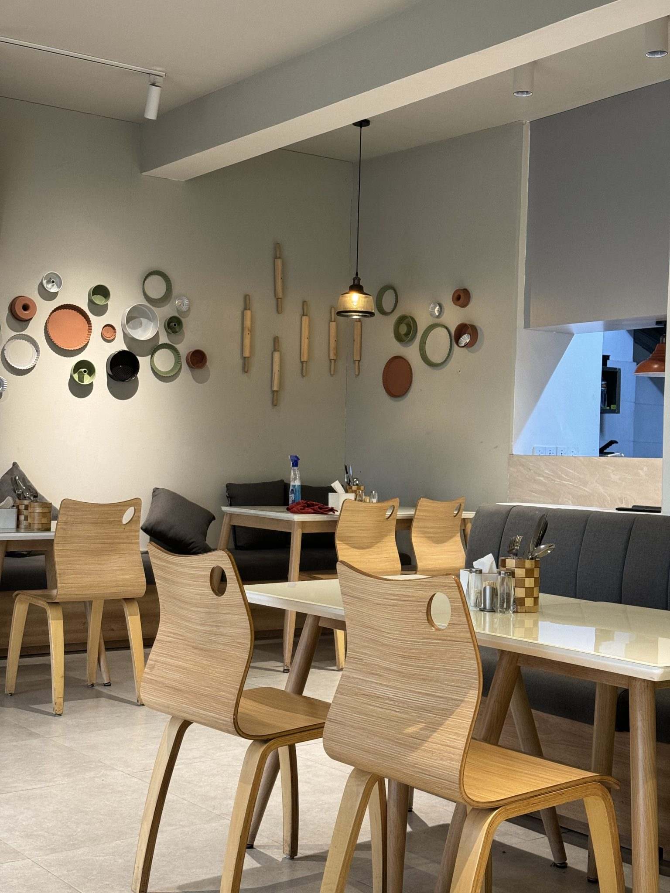
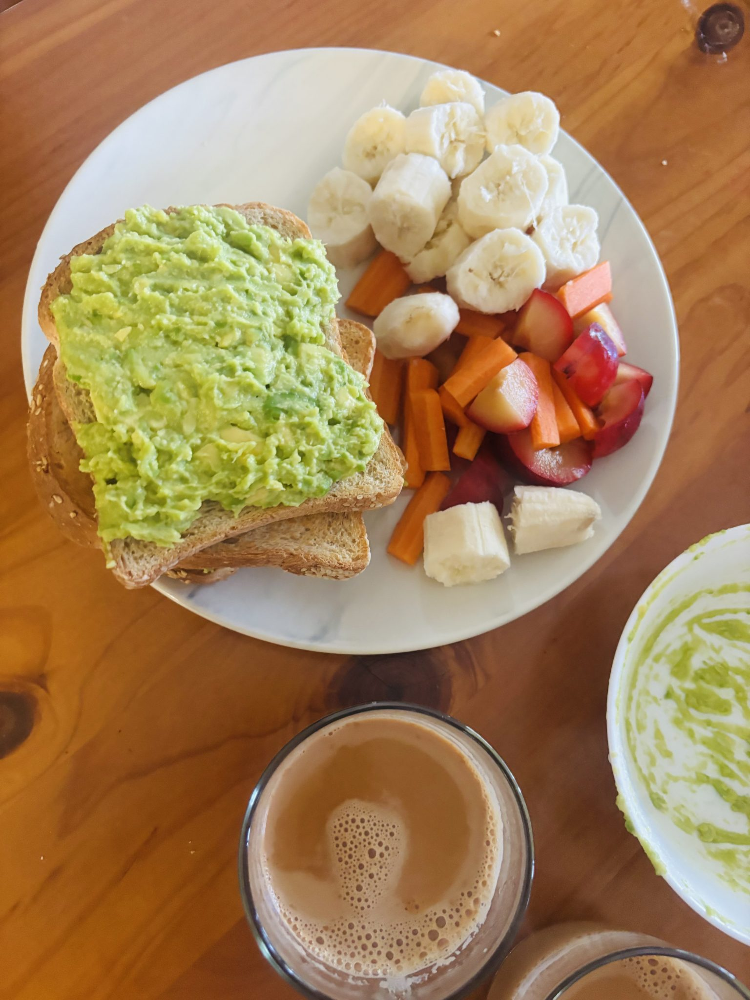
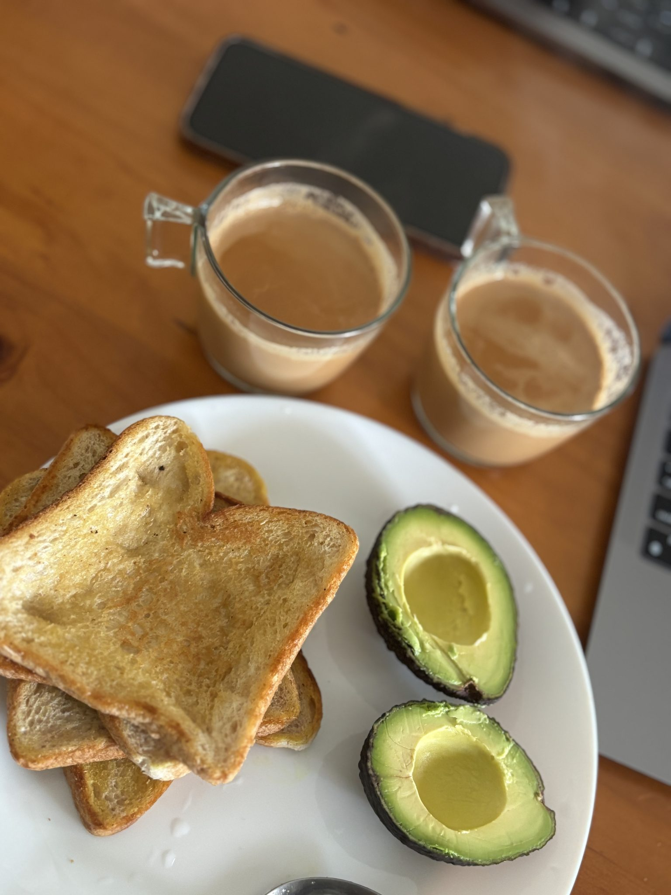
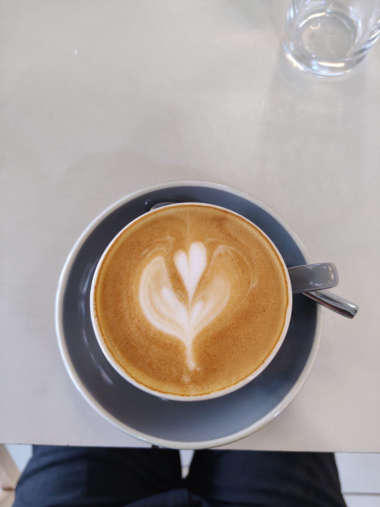
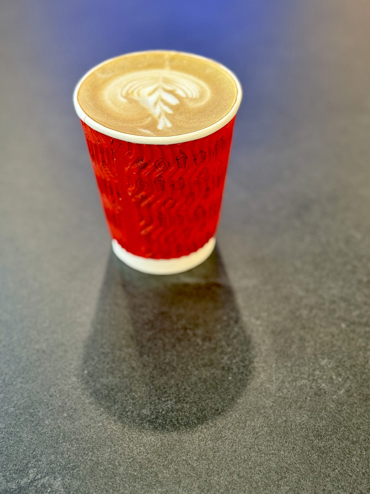

Cafe Federal
選べる朝、
静かな時間。
具材を自分で選ぶモーニングプレートと、丁寧なひと皿のカフェ。
その日の気分で具材を選び、静かな木目調の店内でひと息つく。Cafe Federalの朝は、せかされない時間から始まります。
アクセス・ご案内を見る
Chapter 01
具材は、
あなたが選ぶ。
Cafe Federalのモーニングは、ひとつの決まった形がありません。アボカドやパン、サラダなど、好みの具材を3〜4種類選んでプレートに仕立てるスタイルが特徴です。その日の空腹の具合や気分に合わせて組み合わせを変えられるので、何度訪れても同じ朝にはなりません。
新鮮なアボカドの味わいや、サラダにあわせたドレッシング、チキンの仕上げなど、組み合わせ次第で表情が変わる一皿を、ゆっくりと選ぶ時間そのものも含めて楽しんでいただけます。
メニュー内容・価格は店舗へお問い合わせください。
アクセス・ご案内を見る →



Chapter 02
静かに、丁寧に。
一杯のアート。
カップの中には、ラテアートやソイラテアートが静かに描かれています。華やかに主張するものではなく、一杯ずつ丁寧に仕上げられた、控えめな仕事の跡です。
コーヒー自体のコクと香りにも、落ち着いた余韻があります。朝の目覚めの一杯として、ゆっくりと味わっていただけるものを目指しています。
メニューの詳細やカフェインレス等のご用意については、店舗へお問い合わせください。
アクセス・ご案内を見る →Chapter 03
ひとりでも、
心地よく。

木目を基調にした店内は、温かみがありながらも静かに整っています。窓辺の席に腰を下ろすと、やわらかな光と落ち着いた色合いに包まれ、自然と肩の力が抜けていきます。
店内にはBGMがやや大きめに流れていますが、それが会話の緊張をほどき、ひとりで訪れた時間もかえって過ごしやすいものにしています。実際、ひとりで来店するお客様も多く、スタッフの気配りによって初めての来店でも構えずに過ごせる、という声が寄せられています。
Chapter 04
訪れた方の声
Googleに寄せられた声の一部をご紹介します。
(Google評価4.4 ／ クチコミ133件)
具材を3〜4種類、自分で選べるスタイルがその日の気分に合わせられて良かったです。
店内はオシャレで静かで落ち着いていて、接客もとても丁寧でした。
木目の温かい雰囲気で、BGMがあるからこそ、ひとりでも過ごしやすく感じました。
ひとりでの来店に少し緊張していましたが、スタッフの方が優しく話しかけてくれて、気持ちがほどけました。
Chapter 05
ご来店にあたって
休日の午前は混み合うことがあるようです。時間に余裕を持ってお越しいただくか、事前に店舗へご確認いただくと安心です。
- ご予約
- ご予約については、店舗へお問い合わせください。
- 駐車場
- 駐車場の有無・場所につきましても、店舗へお問い合わせの上ご確認ください。
- 営業時間・定休日
- 営業時間・定休日は、店舗へお問い合わせください。
アクセス方法やお問い合わせ先は、このページの最後にまとめてご案内しています。
アクセス・お問い合わせへ進むChapter 06
アクセス・
お問い合わせ
Google評価4.4 ／ クチコミ133件。詳しいご案内は、以下よりお問い合わせください。
- 店名
- Cafe Federal
- 所在地
- 住所は確定次第掲載いたします(現在準備中)
- 電話番号
- 電話番号は確定次第掲載いたします(現在準備中)
- 営業時間・定休日
- 営業時間・定休日は店舗へお問い合わせください
- 駐車場
- 駐車場の有無・場所はお問い合わせの上ご確認ください
- ご予約
- ご予約については店舗へお問い合わせください